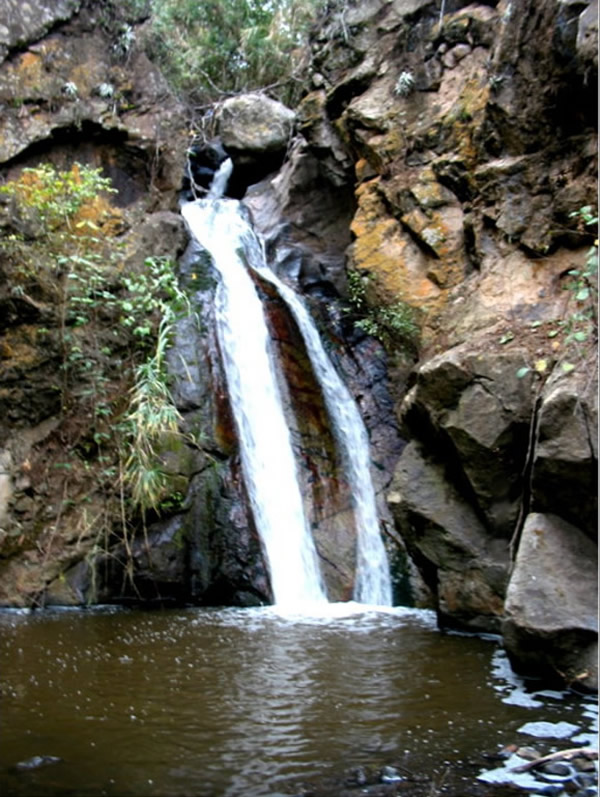

UBICACION: POMAHUACA TIEMPO DE LLEGADA: 1.5 HORAS DESDE POMAHUACA PUEBLO En la fotografía muestra la cuarta chorrera denominada LA ESTOLA DEL CURA que tiene una altura promedio de 10 metros. El agua proviene de los bosques de neblina de cañarís - Lambayeque que originan la quebrada Paltic o Paltique (En peligro de contaminación minera). A 3 horas ida y vuelta desde el distrito de Pomahuaca, 10 minutos en moto taxi y el resto a pie por camino de herradura de fácil acceso, se recomienda llevar agua y calzar zapatillas deportivas.
